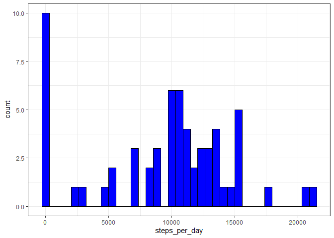
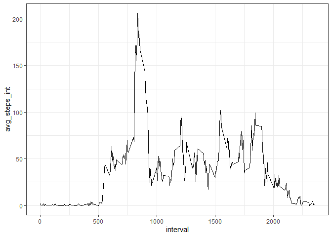

Reproducible Research: Peer Assessment 1
Maria Freydlin
Loading and preprocessing the data
library(dplyr)
library(ggplot2)
unzip("activity.zip")
activity <- read.csv('activity.csv')
activity$date <- as.Date(activity$date, '%Y-%m-%d')
str(activity)## 'data.frame': 17568 obs. of 3 variables:
## $ steps : int NA NA NA NA NA NA NA NA NA NA ...
## $ date : Date, format: "2012-10-01" "2012-10-01" ...
## $ interval: int 0 5 10 15 20 25 30 35 40 45 ...What is mean total number of steps taken per day?
Calculate total daily steps
step_sum <- activity %>% group_by(date) %>% summarise(steps_per_day=sum(steps, na.rm=T))
head(step_sum)## # A tibble: 6 x 2
## date steps_per_day
## <date> <int>
## 1 2012-10-01 0
## 2 2012-10-02 126
## 3 2012-10-03 11352
## 4 2012-10-04 12116
## 5 2012-10-05 13294
## 6 2012-10-06 15420Plot a histogram of total daily steps
g <- ggplot(step_sum, aes(steps_per_day)) +
geom_histogram(fill='blue', color='black', bins=37)+theme_bw()
print(g)
Calculate average daily steps
mean(step_sum$steps_per_day)## [1] 9354.23Calculate Median Daily Steps
median(step_sum$steps_per_day)## [1] 10395What is the average daily activity pattern?
Calculate average steps in each interval
int_avg_steps <- activity %>% group_by(interval)%>% summarise(avg_steps_int=mean(steps, na.rm=T))
head(int_avg_steps)## # A tibble: 6 x 2
## interval avg_steps_int
## <int> <dbl>
## 1 0 1.72
## 2 5 0.340
## 3 10 0.132
## 4 15 0.151
## 5 20 0.0755
## 6 25 2.09Time series plot of average steps by interval
t <- ggplot(int_avg_steps, aes(x=interval, y=avg_steps_int))+geom_line()+theme_bw()
print(t)
Find interval with maximum steps
max_steps_int <- filter(int_avg_steps, avg_steps_int==max(avg_steps_int))
print(max_steps_int)## # A tibble: 1 x 2
## interval avg_steps_int
## <int> <dbl>
## 1 835 206.Imputing missing values
Total number of missing values
missing_values <-sum(!complete.cases(activity))
print(missing_values)## [1] 2304Impute missing steps by the average steps in each interval
Create interval average values
int_avg <- function(interval){
return(mean(activity$step[activity$interval==interval], na.rm=T))
}
int_a <- sapply(activity$interval, int_avg)
head(int_a)## [1] 1.7169811 0.3396226 0.1320755 0.1509434 0.0754717 2.0943396Impute steps using int_avg values
impute_steps <- function(steps, int_a){
out <- steps
for (i in 1:length(steps)){
if (is.na(steps[i])){
out[i] <- int_a[i]
} else {
out[i] <- steps[i]
}
}
return(out)
}
steps <- impute_steps(activity$steps, int_a)
head(steps)## [1] 1.7169811 0.3396226 0.1320755 0.1509434 0.0754717 2.0943396Create new data set with imputed steps
activity.new <- activity
activity.new$steps <- steps
head(activity.new)## steps date interval
## 1 1.7169811 2012-10-01 0
## 2 0.3396226 2012-10-01 5
## 3 0.1320755 2012-10-01 10
## 4 0.1509434 2012-10-01 15
## 5 0.0754717 2012-10-01 20
## 6 2.0943396 2012-10-01 25Histogram of the new data reflects that missing data was removed and due to the imputation mean and median are now the same and more accurate
step_sum_new <- activity.new %>% group_by(date) %>% summarise(steps_per_day=sum(steps))
head(step_sum_new)## # A tibble: 6 x 2
## date steps_per_day
## <date> <dbl>
## 1 2012-10-01 10766.
## 2 2012-10-02 126
## 3 2012-10-03 11352
## 4 2012-10-04 12116
## 5 2012-10-05 13294
## 6 2012-10-06 15420n <- ggplot(step_sum_new, aes(steps_per_day)) +
geom_histogram(fill='blue', color='black', bins=37)+theme_bw()
print(n)
Average of the imputed daily steps
mean(step_sum_new$steps_per_day)## [1] 10766.19Median of the imputed daily steps
median(step_sum_new$steps_per_day)## [1] 10766.19Are there differences in activity patterns between weekdays and weekends?
Create new variable for weekdays and weekends
days <- weekdays(activity.new$date)
wkdays <- function(days){
out <- days
for (i in 1:length(days)){
if (days[i] %in% c('Saturday', 'Sunday')){
out[i] <- 'weekend'
} else {
out[i] <- 'weekday'
}
}
return(out)
}
activity.new$day <- wkdays(days)
activity.new$day <- as.factor(activity.new$day)
str(activity.new)## 'data.frame': 17568 obs. of 4 variables:
## $ steps : num 1.717 0.3396 0.1321 0.1509 0.0755 ...
## $ date : Date, format: "2012-10-01" "2012-10-01" ...
## $ interval: int 0 5 10 15 20 25 30 35 40 45 ...
## $ day : Factor w/ 2 levels "weekday","weekend": 1 1 1 1 1 1 1 1 1 1 ...Plot average steps by interval on weekdays and weekends
int_avg_steps_new <- activity.new %>% group_by(interval, day)%>% summarise(avg_steps_int=mean(steps, na.rm=T))
head(int_avg_steps_new)## # A tibble: 6 x 3
## # Groups: interval [3]
## interval day avg_steps_int
## <int> <fct> <dbl>
## 1 0 weekday 2.25
## 2 0 weekend 0.215
## 3 5 weekday 0.445
## 4 5 weekend 0.0425
## 5 10 weekday 0.173
## 6 10 weekend 0.0165w <- ggplot(int_avg_steps_new, aes(x=interval, y=avg_steps_int))+
geom_line()+facet_grid(day ~ .)+theme_bw()
print(w)